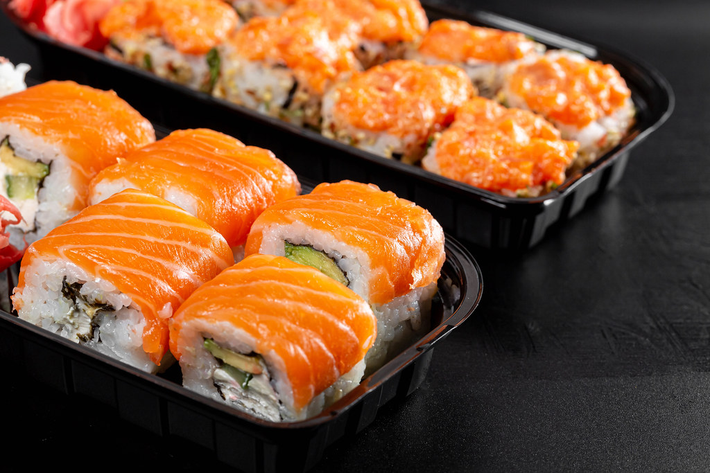
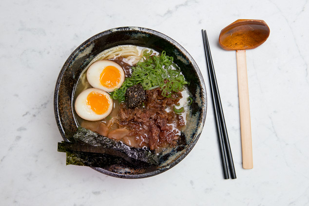

Japanese Cuisine
Home
Favorite Movie
Favorite Cuisine
Favorite National Park
Resume
LinkedIn
 
Sushi
Sushi has been one of my favorite foods for as long as I can remember
Ramen
The first time I had ramen was in Washington, D.C. and it changed my life